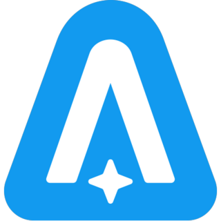

 ASTRONEER
Details
 |
|
| Spielzeit | 2h 28m 0s |
| Letzte Aktivität | 24.12.2017 3:30:21 |
| Hinzugefügt | 19.12.2019 |
| Modifiziert | 10.11.2022 14:00:12 |
| Fertigstellungsstatus | Gespielt |
| Bibliothek | Steam |
| Quelle | Steam |
| Plattform | PC (Windows) |
| Veröffentlichungsdatum | 05.02.2019 |
| Community Bewertungen | 78 |
| Kritiker Punkte | 81 |
| Benutzerwertung | |
| Genre | Adventure Indie Survival |
| Entwickler | System Era Softworks |
| Verleger | System Era Softworks |
| Eigenschaft | Controller Support Co-op Multiplayer Single Player |
| Links | Community Hub Discussions News Store Page PCGamingWiki |
| Tag | Co-Op Full Controller Support |
Beschreibung
Explore and reshape distant worlds! Astroneer is set during the 25th century Intergalactic Age of Discovery, where Astroneers explore the frontiers of outer space, risking their lives in harsh environments to unearth rare discoveries and unlock the mysteries of the universe.
In this space sandbox adventure, players can work together to build custom bases above or below ground, create vehicles to explore a vast solar system, and use terrain to create anything they can imagine. A player’s creativity and ingenuity are the key to thriving on exciting planetary adventures! In Astroneer you can:.gif?t=1572895142)
In Astroneer, players use their deform tool to dig, collect, shape and build anything they wish. Use this ability to dig to the center of the planet, build a ramp into the sky, or make megaliths just by using terrain!
Our vast solar system includes 7 wondrous planets that players can travel between and explore every inch of, from the entire spherical surface, through treacherous layers of caves, all the way down to mysterious the core. Each of those planets has unique and challenging surface and cave biomes that offer a multitude of challenges for players on their journey.
Items that Astroneers craft and find in the world can all be snapped and connected together to create unique creations for any situation. Customize and decorate your bases, vehicles, and Astroneer.
Astroneer is better with friends. Group up with other players and work together to create massive industrial bases or to create fun games in the extensive creative sandbox.
Once Astroneers are ready, they may choose to attempt to understand and possibly harness the power behind mysterious structures found in the world.
Astroneer began as an Early Access title on Steam and would not be here today if not for your support, feedback, and ideas throughout that process. Now that we have delivered our 1.0 version, we want to reiterate our pledge to continue building on the foundation that is Astroneer with free, ongoing content updates. If you're curious about the direction we're aiming for, be sure to go check out our roadmap and our development vlogs to keep updated on what we are working on!
In this space sandbox adventure, players can work together to build custom bases above or below ground, create vehicles to explore a vast solar system, and use terrain to create anything they can imagine. A player’s creativity and ingenuity are the key to thriving on exciting planetary adventures! In Astroneer you can:
Reshape the ground under your feet as though it were made of clay.
In Astroneer, players use their deform tool to dig, collect, shape and build anything they wish. Use this ability to dig to the center of the planet, build a ramp into the sky, or make megaliths just by using terrain!
Survive on and explore carefully crafted planets that can be entirely deformed and traversed.
Our vast solar system includes 7 wondrous planets that players can travel between and explore every inch of, from the entire spherical surface, through treacherous layers of caves, all the way down to mysterious the core. Each of those planets has unique and challenging surface and cave biomes that offer a multitude of challenges for players on their journey.
Snap together components and objects to build bases and vehicles.
Items that Astroneers craft and find in the world can all be snapped and connected together to create unique creations for any situation. Customize and decorate your bases, vehicles, and Astroneer.
Play with friends in 4 player online drop-in/drop-out co-op.
Astroneer is better with friends. Group up with other players and work together to create massive industrial bases or to create fun games in the extensive creative sandbox.
Discover and uncover the mysteries of the solar system.
Once Astroneers are ready, they may choose to attempt to understand and possibly harness the power behind mysterious structures found in the world.
Astroneer began as an Early Access title on Steam and would not be here today if not for your support, feedback, and ideas throughout that process. Now that we have delivered our 1.0 version, we want to reiterate our pledge to continue building on the foundation that is Astroneer with free, ongoing content updates. If you're curious about the direction we're aiming for, be sure to go check out our roadmap and our development vlogs to keep updated on what we are working on!